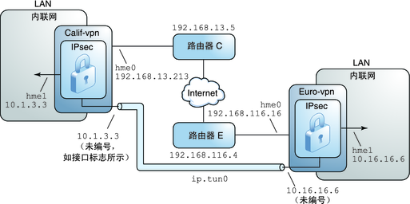

IPsec
Created: November 18, 2021 Sort: Security
IPsec
IPsec 通过验证包、加密包或同时执行这两种操作来保护 IP 包。——ORACLE
IPsec 在 IP 模块内部执行，刚好在应用层之下，因此，Internet 应用程序可以直接利用 IPsec，而不必配置自身以使用 IPsec。若使用得当，IPsec 是保证网络通信安全的有效工具。
IPsec 保护涉及五个主要组件：
- 安全协议
- 安全关联数据库 (Security associations database, SADB)
- 密钥管理
- 安全机制
- 安全策略数据库 (Security policy database, SPD)
IPsec 保护机制
- 验证头（Authentication Header，AH）：数据报提供了数据验证、高完整性以及重放保护，AH 插在 IP 数据包头和传输头之间；
- 封装安全有效负载（Encapsulating Security Payload）：为 ESP 所封装的内容提供了保密性，仅为 ESP 所封装的数据报部分提供保护。
| 协议 | 包范围 | 保护 | 防止的攻击 |
|---|---|---|---|
| AH | 保护包中从 IP 数据包头到传输层头的内容 | 提供高完整性、数据验证： | |
| 确保接收者接收到的正是发送者发送的内容； | |||
| 在 AH 没有启用重放保护时容易受到重放攻击影响。 | 重放、剪贴 | ||
| ESP | 保护数据报中紧跟在 ESP 之后的包。 | 使用验证选项时，提供与 AH 相同的保护； | |
| 使用加密选项时，对 IP 数据报进行加密，保证保密性； | |||
| 同时使用两个选项时，提供高完整性、数据验证和保密性。 | 重放、剪贴 | ||
| 窃听 |
重放、剪贴、窃听 |
IPsec 操作模式
传输模式和隧道模式：
- 在传输模式下，外部头决定保护内部 IP 包的 IPsec 策略；
- 在隧道模式下，内部 IP 包决定保护其内容的 IPsec 策略。
在传输模式下：
- 外部头、下一个头以及下一个头支持的任何端口都可用于确定 IPsec 策略；
- IPsec 可在一个端口不同粒度的两个 IP 地址之间强制实行不同的传输模式策略：
- 如果下一个头是 TCP（支持端口），则可为外部 IP 地址的 TCP 端口设置 IPsec 策略；
- 如果下一个头是 IP 数据包头，外部头和内部 IP 数据包头可用于决定 IPsec 策略。
在隧道模式下：
- 隧道模式仅适用于 IP-in-IP 数据报：
- 如果在家中的计算机用户要连接到中心计算机位置，以隧道模式进行隧道连接将会很有用；
- IPsec 策略强制实施于内部 IP 数据报的内容中，可针对不同的内部 IP 地址强制实施不同的 IPsec 策略：
- 内部 IP 数据包头、其下一个头及下一个头支持的端口，可以强制实施策略；
- 与传输模式不同，在隧道模式下，外部 IP 数据包头不指示其内部 IP 数据报的策略。
IPsec VPN
已配置的隧道是点对点接口：
- 使用隧道，可以将一个 IP 包封装到另一个 IP 包中；
- 正确配置的隧道同时要求隧道源和隧道目标；
- 退出隧道的包必须源于隧道目标中指定的对等设备。
隧道可创建明显的 IP 物理接口（physical interface），物理链接的完整性取决于基础安全协议。
如果安全地设置了安全关联（security association, SA），则可以信任隧道；
如果此信任存在，则可以使用按接口 IP 转发来创建虚拟专用网络（virtual private network, VPN）。

Reference
ORACLE：https://docs.oracle.com/cd/E24847_01/html/819-7058/ipsec-ov-2.html#scrolltoc